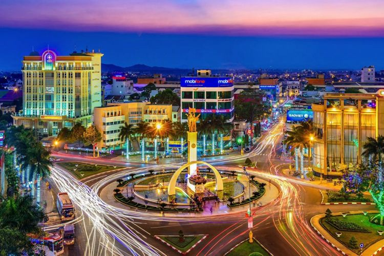
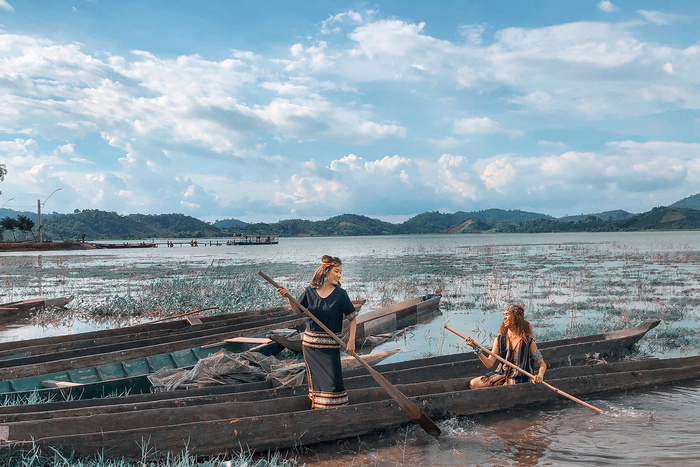

NGÃ 6 BUÔN MA THUỘT XƯA VÀ NAY – Nói không ngoa chứ, ở một khía cạnh nào đó (về mặt tượng trưng chẳng hạn) thì tượng đài chiến thắng Buôn Ma Thuột – hay còn gọi là Tượng đài Ngã 6, ngắn gọn hơn nữa là Ngã 6 – cũng có thể sánh ngang tầm với tháp Effiel ở Pháp, hay tượng nữ thần Tự do ở New York vậy. Bởi, với người dân BMT, Tượng đài ngã 6 được xem là biểu tượng của thành phố Buôn Ma Thuột đầy tự hào và kiêu hãnh từ bao lâu nay. Đẹp quá xá là đẹp ha ^^! Thật ra, với nhiều người, khi nhắc đến Buôn Ma Thuột – Daklak, họ nghĩ rằng thành phố mình còn nghèo, hoang sơ, rừng rú ghê gớm lắm. Bởi vậy, mình có nói là trên Buôn Ma Thuột, mình cưỡi voi đi học không àh, vậy mà nó cũng tin. Qua bài viết này, mình hy vọng các bạn sẽ SHARE nhiều hơn nữa để họ sẽ ngỡ ngàng và ngạc nhiên khi thấy sự đổi mình của Buôn Ma Thuột ta mà “Ồ, Buôn Ma Thuột đẹp hơn mình tưởng!”.
Người ta ấn tượng về Đà Lạt với muôn ngàn sắc hoa, cái se se lạnh, dặt dìu sương khói để lòng người cũng bảng lảng, thư thái, sảng khoái mà nhấm nháp cái thi vị của sự mộng mơ. Đến với Huế, du khách lạc bước bởi đặc sản giọng Huế chi mà vừa duyên vừa lạ, áo dài Huế sao mà hoài nhớ, hoài thương.Thật ra, với nhiều người, khi nhắc đến Buôn Ma Thuột – Daklak, họ nghĩ rằng thành phố mình còn nghèo, hoang sơ, rừng rú ghê gớm lắm. Bởi vậy, mình có nói là trên Buôn Ma Thuột, mình cưỡi voi đi học không àh, vậy mà nó cũng tin. :))) Qua bài viết này, mình hy vọng các bạn sẽ SHARE nhiều hơn nữa để họ sẽ ngỡ ngàng và ngạc nhiên khi thấy sự đổi mình của Buôn Ma Thuột ta mà “Ồ, Buôn Ma Thuột đẹp hơn mình tưởng!
Hồ Lắk là một trong những điểm du lịch Tây Nguyên nổi tiếng và là hồ nước tự nhiên lớn nhất của Việt Nam. Nhìn từ xa lại, cảnh hồ như một dải lụa mềm uốn mình trong cánh rừng già. Vào mùa mưa, mực nước trong hồ dâng cao, xung quanh hồ là những vạt hoa sen, hoa súng đua nhau khoe sắc càng làm cho bức tranh thiên nhiên nơi đây trở nên rực rỡ. Không những thế khi đến hồ Lắk bạn còn được khám phá hệ động thực vật phong phú trong số đó có những loài đặc biệt quý hiếm chỉ có tại nơi này.Khởi nguồn của những mạch nước từ dãy núi Chư Chang Sin, sau khi len lỏi qua các cánh rừng của đại ngàn Tây Nguyên hùng vĩ, tất cả đã cùng nhau hội tụ ở vùng đất trũng bên thị trấn Lạc Thiện của huyện Lắk, hình thành nên hồ Lắk rộng mênh mông trên tuyến đường giao thông nối giữa hai thành phố Buôn Ma Thuột và Đà Lạt.
Bạn sẽ phải lòng Đà Lạt ngay từ lần đầu tiên đặt chân tới bởi vùng đất ấy bình yên như hơi thở, bởi những cái tên mà vùng đất ấy mang trong mình như thành phố ngàn hoa, xứ sở tình yêu, thành phố đượm buồn, thành phố mộng mơ.Có độ cao 1500m so với mực nước biển nên thời tiết mát mẻ, dễ chịu, “thành phố ngàn hoa” chính là điểm nghỉ dưỡng lý tưởng nhất cho tất cả đối tượng khách du lịch. Những “ cái không” thú vị của thành phố xinh đẹp có thể kể ra như: không hệ thống đèn giao thông, không có cảnh sát túc trực tại các nút thắt giao thông, không có xe xích lô chở khách du lịch, không điều hòa, không thức khuya, không có báo Lâm Đồng tại các sạp báo ở Đà Lạt.Nếu bạn muốn đi du lịch mà chưa chọn được địa điểm thì đà lạt sẽ là nơi thích hợp để bạn và người thân có một kì nghỉ đáng nhớ